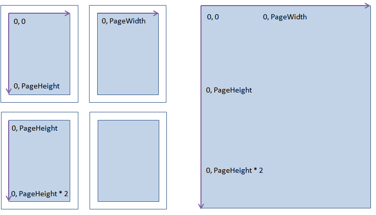
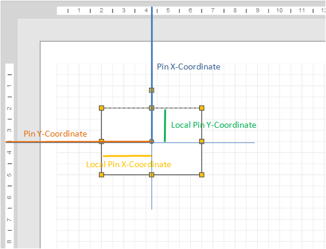

Working with coordinates in JS Graph
Overview
This chapter gives you an introduction to the coordinate system used in JS Graph. There are to different areas of interest are explained: The general coordinate system and the way coordinates are assigned an used within nodes and edges. Another topic will be the concept of formulas. Formulas can be used to define dependencies between coordinates. Finally containers will be introduced. Containers can contain nodes and edges and do have their own coordinate system.
Coordinate System
The coordinate system uses metric units as a base unit. A JS Graph Unit corresponds to 1/100 of a mm. Therefore 1000 units makes up a centimeter. This unit is also used for most other size units like line width or shadow offset. An exception is the font size, which is defined in points. The coordinates grow along the two axis from left to right and from top to bottom. Angles are given in radians.
Pages
The drawing area is defined by pages. If you start with an empty drawing the drawing area is defined by one pages size and width. Whenever an item is placed or created outside this page, the drawing area will be extended by another page width or height. There are two different view mode for the drawing area. One is the endless mode where the drawing area is visualized as one big drawing sheet and the page mode, where the drawing area is visualized by showing the individual pages. The idea is shown in the following image. The coordinates system ends at the page bottom (excluding the margin) and continues on the next page after the margin. The page sizes and margins can be changed by the application developer. The page mode also can be thought of as a preview for printing, as the page sizes will also be used when a PDF for output is created, if you are using the PDF generator. The image shows the page mode coordinates system on the left side and the endless mode on the right side. By default the page mode is set when a new graph is created.
The following samples show to work with the page extensions and the page mode. The page format is changed from the default A4 to A5. In addition the orientation of the drawing page changes and a zoom factor is set. In endless mode the pages are not visible:
In page mode the pages are visible:
Node Coordinates
The position of a note is composed of two different coordinates, the pin and the local pin. The local pin places the pin within the node. A coordinate of 2000, 2000 will place the pin at 2 cm to the right and 2 cm from the top of the origin or top left corner of the node. By default the local pin is placed in the middle of the node. This is achieved by using a formula for the placement of the local pin (x=WIDTH * 0.5, y=HEIGHT * 0.5). Formulas will be explained in the next chapter. This guarantees that the local pin is always in the middle of the node. The local pin also serves as the rotation center for the node. The pin places the local pin within the global coordinates system. If you define the local pin as 0, 0, the top left corner of the node will equal the pin. The following image illustrates the idea:
In the following sample, three nodes are created differently to demonstrate the effect of setting a local pin. The first node leaves the local pin untouched. Therefore it is located by default at the center of the node. The pin is placed at the coordinate, 5000, 5000. As the size of the node is defined as 3000, 3000, the top left coordinate of the node is placed at 3500, 3500. This is due to the fact, that the pin is defined to be in the middle. Then half of the size has to be subtracted to place the origin of the node in order to have the pin at 5000, 5000 and the local pin placed at the center. The second node receives a new local pin. It is set to 0, 0. This causes that the pin and the local pin are identical and the object originates at the pin coordinate. As the local pin is the center of rotation, the object will rotate around the top left corner. Please note that we are already using a formula here. It will be explaind in detail in the next section.
If you select the nodes, the center of rotation will also reflect the pin position. This way you can see the placement of the pin in the page coordinate system. In addition you can the that the local pin is positioning the pin within the object as it is defined. That is why the pin is in the middle of the first node, at the origin of the second node and within the left bottom quadrant of the third node.
Defining Formulas
JS Graph supports the definition of formulas for the properties of a graphical item. This way you can build dependencies between objects on the graph. You can define a formula for most of the properties of an item. They can be used to connect or calculate coordinates of items and derive them from other items. This is, as you have seen, used for the local pin, but can also be used for a pin or even for the labal or the formatting of an object. Currently arithmetic operations and brackets are allowed for usage in formulas. In the future we will also add mathematical functions.
The syntax resembles to the usage of formulas in a spreadsheet. You reference another item and the
property that you like to get information about. If you leave out the item, the property of the item itself is references. You can also use the Parent keyword, which references
the parent of an item. This is useful for containers, which are described later on. The reference to another item is created using the Item keyword in conjunction with a dot and
the id of the referenced item. A typical reference therefore can be: Item.1, which references the item with the id 1. Ids are automatically assigned to all items and are
unique within the graph and the lifetime of the graph. To get the value of a property of an item, you connect the reference with the name of the property. To retrieve the
width of another item, you would use Item.1!Width as a formula. If you need the width of the same item you simply enter 'Width' as the reference and to retrieve the parent width,
you can assign a formula like Parent!Width. Lets look at an example to clarify the functionality. In the following code the second nodes pin is connected to the
pin of the first node. So whenever the first node is moved, second one adapts to the movement. Formula are defined by creating an expression. There are different
types of expressions to support different result types for number, strings, or booleans. An expression is created by passing a value and the formula to it. Almost all
properties of the graphical items can be initialized with a static value or an expression.
You can also observe that we defined a couple of attributes. The moveable and sizeable property has been set to false. This leads to the restriction that the target item can not be moved or resized any more. This prevents that the formulas are overwritten, if the user moves the object. If they were not protected, the formula will be overwritten with the new static coordinates.
To show you the flexibility and the power of formulas another example will be shown. In this example the line width of the line is triggered by the x position of the ellipse. The more you move the ellipse to the right, the thicker the line gets. In addition the the color of the ellipse is also changing. The idea is the same, but different properties are used. Finally the text of the label of the ellipse reflects the current width of the line.
Working with a Container
Container are be used to group items. Any Node or GraphItem can be a container. A container manages of list of dependent items. The items are part of the container and
will be automatically moved and handled with the container. You can think of it as of a group of items. A couple of behaviours are different as you might expect. Items within
a container are not automatically resized, when the container is resized. This can be achieved by making the dimensions and positions of the inner items dependent
of the size of the container using formulas. There is group command that does this automatically for you. Items being part of a container can still be moved freely
within the container and out of it. If an item is moved outside the container it will usually be removed from the container. If an item is dragged inside a container,
it will be added to the container. This is underlined by a visual effect.
Node coordinates are always relative to its container. There the objects within this container get a pin that defines its position as an offset to the top left corner of the container. If you apply a formula to a node within a container, it will be calculated using the containers coordinate system.
As containers are also nodes they can have any visual appearence and can also have ports to connect them with a link. Items within the container are by default not clipped by the container, but this is an available attribute. Adding an item to a container is simply like adding an item to the graph. In fact the graph is itself a container. Let us see an example:
Please note, that we also created a label. Labels are also just nodes that are placed in a container. This way you can attach a label to any node even more than one, if needed. The label gets automatically placed in the middle using formulas. Here we changed the label position to be placed at the bottom middle of the container as it would be covered by the created node within the container. Move the container around or resize it to see the results.
In the next sample two nodes are added. One node having static coordinates that do not change. The other node, an ellipsis, is created using a formula that refers to the parent. This way the node resizes, when the parent size is changing.
This way you can easily create complex containers having all kinds of behaviours with objects that have a static position or which will be resized and all in the same container. This is useful in many situations. Just think of a combined node with a label and an icon to show the status. The label should probably always be centered and therefore is a candidate for formulas. The icon should always be at the top left corner of the symbol and keeping size and therefore is a candidate for static coordinates. If you hit F2, you can edit the symbol text.
If the Graph has the input focus and the symbol is selected, you can hit F2 on the keyboard to edit the symbol text.
This was the final step for this tutorial. The next tutorial will give you an extended introduction to formatting that can be applied to a GraphItem.
Follow JS Graph - Formatting to continue.